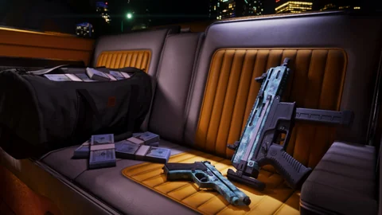

Customization, pre-order bonus
Vintage Vice City Pack weapon pattern
Tropical pattern inspired by Tommy Vercetti’s shirt. Gun-by-gun compatibility isn’t detailed.

The essentials
Tropical pattern inspired by Tommy Vercetti’s shirt. Weapon-by-weapon compatibility isn’t detailed. How to get it: pre-order bonus (vintage Vice City Pack, most weapons). Status: named or described by Rockstar. Separate price in GTA VI: not published; this content comes with an edition or a pre-order. Source: Vintage Vice City Pack: interactive presentation.
Identity
| Name | Vintage Vice City Pack weapon pattern |
|---|---|
| Category | Customization |
| Type | pattern |
| Obtention | pre-order bonus |
| Condition | Vintage Vice City Pack, most weapons |
| Status | Named or described by Rockstar |
| Price in GTA VI | not published, tied to an edition |
| Tracking | Can be checked off in My progress |
| Source | Vintage Vice City Pack: interactive presentation |
What comes with the game
The details of the pieces and any separate purchase are not published: the page will say so as soon as Rockstar clarifies. Until then, nothing is invented.
The other contents tied to the editions
Report an error on this pageWhat’s confirmed and how we check itIts card in Customization